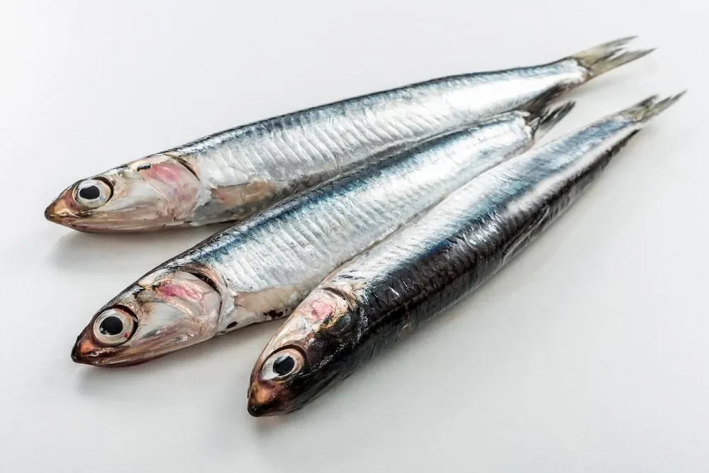

멸치는 청어목 멸칫과다. 어릴 적엔 가까운 수면 가까운 곳에 무리를 이룬다. 멸치는 어느 정도 자라면 무리를 떠난다. 이때의 크기는 대략 10cm이다. 이 때부터는 생식이 가능하다. 멸치는 수명 때문에 죽었다는 기록이 없다. 그렇기 때문에 얼마나 자랄수 있는지는 불분명하다. 가끔 어느 정도 자란 대형멸치들이 무리를 지어 해안가에 나타나기도 한다. 대형멸치들은 육식이며 움직이는 속도와 힘은 상상을 초월한다.
영국 호지슨 해양학박사는 자신이 3m가 넘는 멸치를 인도네시아에서 보았다고 주장하고 있다. 세계 여러 생물학자들도 멸치는 무한정으로 성장할수 있다고 언급한바 있다.
우리나라에서도 제주도에 가면 멸치후리기라는 노래가 있다. 옛날 대형멸치들이 배를 습격해 두려움을 담아 멸치를 내쫒기 위해 만든 노래이다.
멸치는 대륙봉해역에 살지만 1m가 넘으면 해구 근처에서 산다. 그래서 어떤 지질학자들은 지진의 원인은 엄청 큰 멸치가 맨틀의 대류를 방해하기 때문이라고 한다.
멸치가 3m가 넘어가면 진화에 가까운 변화를 보인다. 지느러미는 물의 마찰을 줄일수 있는 형태로 바뀌고 백상어를 능가하는 송곳니가 생긴다. 실제로 10m 넘은 멸치는 육안으로 관측할 수 없다. 너무 빠르게 움직이기 때문이다. 실제로 일본 잠수함이 이유없이 두 동강난 적이 있는데 학자들은 멸치의 소행이 유력하다고 전하고 있다.
멸치는 똑똑하다. 아폴로 11호 승무원들에 말에 따르면 달에는 천년된 멸치 화석이 존재했다고 한다. 천문학자들은 그들이 우리보다 몇천년 앞서 달에 착륙했다는 가설을 세우기도 했다.
언제가 우리가 멸치한테 지배당하는 날이 오진 않을까?

요즘은 멸치도 개드립하네